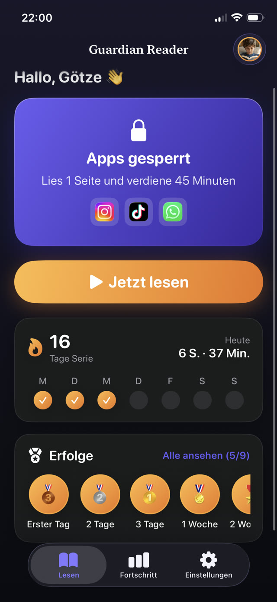
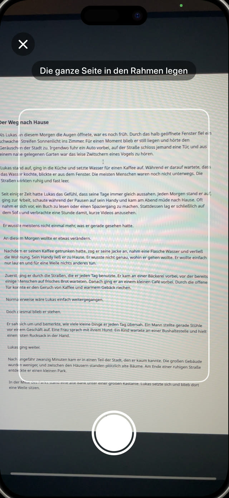
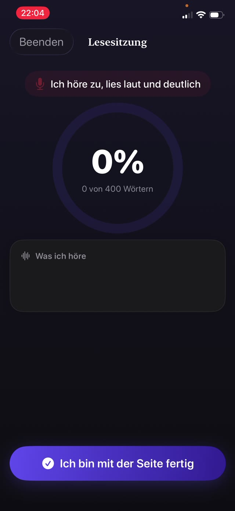
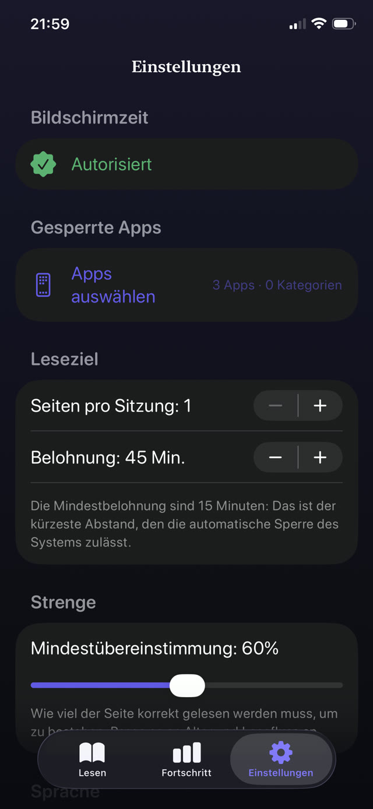
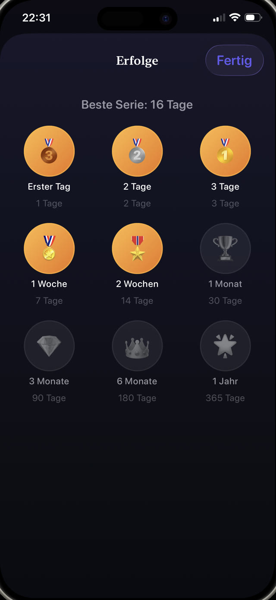

Die Kindersicherung, die beim Lesen zuhört.
Guardian Reader sperrt die Apps, die Sie auswählen. Ihr Kind liest ein echtes Buch laut vor, das iPhone prüft jedes Wort, und die verdiente Bildschirmzeit wird frei. Ohne Willenskraft, weder Ihre noch seine.
Gratis · Für das iPhone des Kindes, iOS 18+ · Kein Konto, kein Tracking · 9 Sprachen


Lesen, um zu spielen.
Guardian Reader stellt ein echtes Buch zwischen Ihr Kind und seine Apps. Ein paar Seiten laut vorgelesen, Wort für Wort geprüft, und der Bildschirm öffnet sich.
iPhone · iOS 18+ · Gratis: geprüftes Lesen + eine gesperrte App · Premium mit 7 Tagen kostenlos
In der App
Apps bleiben gesperrt, bis gelesen wurde.
Kindersicherung und Lesecoach in einem. Ihr Kind bedient sie allein; geprüft wird vom iPhone.
Prüfung in Echtzeit
Sehen Sie zu, wie sie prüft, Wort für Wort.
Während Ihr Kind vorliest, gleicht die App das Gehörte mit den gescannten Seiten ab und der Prozentwert steigt live. Das ist eine echte Sitzung, ein Papierbuch, das einem iPhone vorgelesen wird. Ehrliches Lesen liegt weit über der Messlatte; über etwas anderes reden landet nahe null.
Lautes Vorlesen ist die Übung →
Seiten scannen
Jedes Papierbuch wird zum Schlüssel.
Ihr Kind fotografiert jede Seite, die es lesen wird, ein Foto pro Seite, und liest sie dann am Stück wie ein echtes Buch. Nur der Text innerhalb des Rahmens zählt, und eine in dieser Sitzung bereits gescannte Seite wird automatisch abgelehnt.
Wie Ihre Kinder mehr lesen →
Kein Schummeln
Sie erkennt die Abkürzungen, die Kinder wirklich nehmen.
Kein Quiz zum Raten, kein Ehrensystem. Die gesprochenen Wörter werden mit genau den gescannten Seiten verglichen, der Reihe nach: Überfliegen, Improvisieren oder Behaupten, es sei erledigt, besteht nicht. Stolpern und kleine Fehler schon. Geprüft wird, dass gelesen wurde, nicht dass es perfekt war. Ein Regler legt fest, wie streng die Hürde ist.
So funktioniert verdiente Bildschirmzeit →
Die Belohnung
Lesung bestanden. Handy frei.
Die Apps öffnen sich für genau die verdienten Minuten, mit sichtbarem Countdown. Bei null sperren sie sich von selbst wieder, durchgesetzt von Apples Bildschirmzeit, auch wenn Guardian Reader geschlossen ist.
YouTube und TikTok begrenzen →
Elternregeln
Sie legen den Wechselkurs fest.
Seiten rein, Minuten raus: Eine Seite bringt mit 4 bis 6 Jahren etwa 15 Minuten, bis zu vier Seiten für rund 45 Minuten bei Teenagern. Der Plan schlägt je nach Alter einen Startpunkt vor, und jede Zahl lässt sich hinter einer Eltern-PIN ändern, die vom Gerätecode getrennt ist.
Bildschirmzeit-Regeln, die halten →
Fortschritt und Serien
Medaillen, die sie zurückbringen.
Serien, Sterne und Medaillen für das Kind; Seiten pro Tag, Monat und Jahr für Sie. Premium ergänzt einen PDF-Bericht jeder Sitzung: Datum, Minuten, Übereinstimmung und der tatsächlich gelesene Text, fertig für die Lehrkraft.
Ein Lesetagebuch für die Schule →
Von Grund auf privat
Ein Mikrofon, das auf ein Kind zeigt, muss sich erklären.
Die Kamera liest die Seite, das Mikrofon transkribiert das Vorgelesene, und beides arbeitet ausschließlich auf dem Gerät. Kein Konto, kein Server, keine Analyse, keine Fremd-SDKs: Die Stimme verlässt das iPhone nie, und alles funktioniert offline.
Die vollständige Datenschutzerklärung lesen →How it works
Vier Schritte. Nichts zu verhandeln.
Einmal gemeinsam mit Ihrem Kind einrichten. Danach läuft die Abmachung von selbst: Die Grenze steckt in der App, nicht in Ihrer Stimme.
Apps sperren
Wählen Sie Apps oder ganze Kategorien zum Sperren, etwa YouTube, TikTok oder Spiele, und schützen Sie die Einstellungen mit Ihrer Eltern-PIN.
Seiten scannen
Ihr Kind fotografiert die Seiten des echten Buches, das es lesen wird, ein Foto pro Seite.
Laut vorlesen
Es liest alles am Stück, während das iPhone zuhört und jedes Wort mit dem gescannten Text abgleicht.
Bildschirmzeit wird frei
Lesung bestanden, und die Apps öffnen sich für die verdienten Minuten. Bei null sperren sie sich von selbst.
Guides
Hilfe für die schwierigen Stellen.
Praktische Ratgeber zu Bildschirmzeit, App-Sperren und Lesefreude, und wie Guardian Reader bei jedem davon hilft.
Wie Ihre Kinder mehr lesen
Sieben Ansätze, die bei einem Kind wirken, das lieber am Bildschirm sitzt, und der eine, der Ihnen keine Willenskraft abverlangt.
Ratgeber lesen BildschirmzeitWie Kinder sich Bildschirmzeit erlesen
Bildschirmzeit zu etwas Verdientem statt Selbstverständlichem machen, und wie die Regel hält, ohne dass Sie kontrollieren müssen.
Ratgeber lesen KindersicherungApps auf dem iPhone Ihres Kindes sperren
Was Bildschirmzeit kann und was nicht, wo Kinder die Lücken finden, und wie Sie sie dauerhaft schließen.
Ratgeber lesen YouTube · TikTokYouTube und TikTok für Kinder begrenzen
Warum Zeitlimits allein an endlosen Feeds scheitern, und was stattdessen vor die App gehört.
Ratgeber lesen LeseflüssigkeitLeseflüssigkeit zu Hause üben
Was Lehrkräfte mit Flüssigkeit meinen, warum lautes Lesen die Übung ist, und wie zehn Minuten in einen normalen Abend passen.
Ratgeber lesen FamilienregelnBildschirmzeit-Regeln, die wirklich halten
Warum die meisten Familienregeln nach zwei Wochen zerfallen, und die drei Eigenschaften, die alle überlebenden gemeinsam haben.
Ratgeber lesenFAQ
Fragen, beantwortet.
Wie prüft Guardian Reader, ob mein Kind das Buch wirklich gelesen hat?
Kann mein Kind schummeln, indem es Lesen vortäuscht?
Könnte eine KI-Stimme die Seite statt meines Kindes vorlesen?
Installiere ich Guardian Reader auf meinem Handy oder auf dem meines Kindes?
Welche Apps kann ich auf dem iPhone meines Kindes sperren?
Zeichnet Guardian Reader die Stimme meines Kindes auf?
Welche Bücher funktionieren mit der App?
Für welches Alter ist Guardian Reader gedacht?
Was kostet Guardian Reader?
Bekomme ich ein Lesetagebuch für die Schule?
Funktioniert das ohne Internet?
Kann mein Kind die App einfach löschen oder die Einstellungen ändern?
Heute Abend wird zuerst gelesen.
Zwei Minuten Einrichtung. Ihr Kind liest laut vor, verdient sich seine Bildschirmzeit, und Sie sind nicht länger der Böse.
Laden imApp StoreGratis · Keine Werbung, kein Konto, kein Tracking